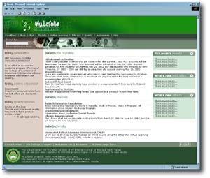

| Introducing
the SharePoint Portal
By:
Precious Anne L. Taliwaga
Why
all the buzz about the SharePoint Portal anyway? Aren’t
the existing portals such as the Library Portal and My.LaSalle
Portal enough?
If these leave nothing to be desired anymore, wait till you
see all La Salle websites, online publications and conferences
in one page. You don’t need to memorize or even bookmark
numerous URLs which you need to access time and again because
they will all be there in the home page. They are just a click
away in the home page.
The Portal uses the Microsoft Sharepoint technology. It’s
a one-stop shop information center where students, faculty
member, administrators or those who have access can do transactions
online. The information is customized depending on the user.
Eventually, users can share documents, participate in discussion
groups, access specific information or change the look of
the their portal.
Much like the main page of the DLSU-Manila web site, the
portal has a space for the DLSU Newsletter headline, special
announcements, quality quotes, the week’s events, what’s
new in the different DLSU web sites, news from the University
Registrar and other news for students and faculty members.
The features you can find in the portal include the “Buzz”
for our discussion boards, Mail for the Outlook Web Access,
My.Info for online applications, Virtual Learning for links
to the IVLE and WebCT sites, Site List for the list of accessible
DLSU web sites, Quality for access to the eQuality web site,
Accessories to include currency converter, weather forecast,
etc., and Help facility.
The design of the main page is still predominantly green
with the Green Archer logo on the banner. Its features don’t
end there. The front-end and back-end builders of this portal
will find maintenance of the web site easier. Once it is up
and running, it will provide both access to pertinent information
needed while helping them manage the documents more easily
thus providing better collaboration.
Just imagine pertinent data to build better business decisions
no matter where they are stored. Imagine news group-style
discussion boards. Imagine effortless searching through volumes
of data across a number of data storage.
[Read related article on Microsoft SharePoint on the Technook]
ITP
Assembly Officers Updates
by: Daisy T. Binuya and Brian O. Co
Calling Cards
Technology has certainly opened up new avenues of communication
between people. Most of us now have several options –
Email, Fax, Snail Mail, even Mobile Phone.
Whatever means you employ, you can be sure that you can always
be connected with whoever you choose with our new calling
cards.
With the implementation of the new faculty manual, all ITPs
are now entitled to one set of calling cards every two years.
Since we were not able to avail of this benefit last school
year (because it wasn’t budgeted), it was decided to
postpone it for one year.
The good news is that by now, each and everyone of us should
have filled out the form from the Marketing Communications
Office, received the initial draft of the card, and sent it
back for final printing. The cards are scheduled for delivery
on July 7.
Service Leave Amendments
Some changes were made to the policies governing ITP service
leaves. First, it has been clarified that service leaves can
be taken on a staggered basis and that it is really intended
for rest after working for three consecutive years rather
than for study or professional development.
Thus, the second paragraph of item 5.2 of the new faculty
manual will now read: “Service leaves are intended as
respite after three (3) years of continuous service.”
The phrase “to give the ITP uninterrupted time for study
or professional development” has been deleted.
Secondly, this provision was added to the first paragraph
of the same section (5.2): “A maximum of five (5) cumulative
days leave without pay (within three (3) years) will not disrupt
continuity of service for purposes of counting eligibility
for service leave.” This condition applies only to those
ITPs who have already earned leaves with pay (normally excluding
those who are on their first year of service with ITC).
|